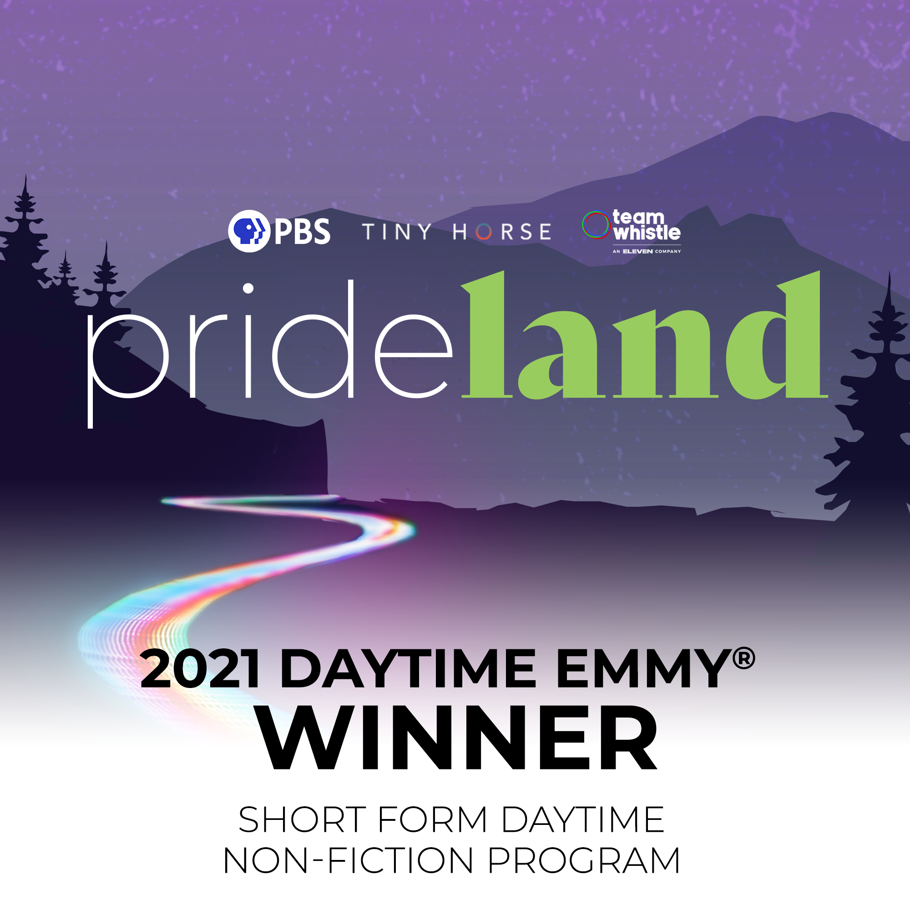

Social media management has been a key part in my work experience. During my internship with a local marketing agency, I began working with real brands, such as Ottogi America and A-Sha. The following summer, I felt confident when I was tasked with managing the various PBS Digital Studios accounts.
Social Media Management
The summer of my sophomore year, I came across an account of a local marketing agency and fell in love with the branding and the work they were doing. I decided to take a leap of faith and apply for an internship, which I was lucky enough to get the offer. Before this internship, my knowledge of social media was from my personal usage and interest, but I never had the opportunity to manage real accounts. However, at Skoop, I was granted access to the food manufacturing brands the agency was working with, such as Ottogi America and A-Sha. Everyday, I used SproutSocial to check and respond to any mentions and comments, and developed a structure for the captions on the tri-weekly posts we uploaded per brand. In addition to writing captions, uploading posts, and engaging with the audience, I brainstormed and designed posts as needed, such as pitching recipe ideas and developing moodboards for future photoshoots.
Content developed for Ottogi America
At PBS Digital Studios, I initially felt intimidated as the social media accounts had large followings. Nonetheless, with the help of my advisor, I began to get the hang of utilizing the PBS Brand Voice to write captions and develop a content schedule that posted 2-3 times a week per platform. Despite the number of followers, engagement was often low. To solve this, I met with social media managers throughout PBS and brainstormed directly with the PBSDS team while also researching different strategies. As Digital Studios is mostly a hub to distribute and showcase video series by third-party producers, I realized that it was difficult to develop fresh content for the Digital Studios platforms. In particular, PBSDS would upload very short GIFs on Instagram, which I found to be ineffective due to the short length of the videos. Instead, I worked on creating platform-specific content and encouraging the producers to utilize best practice when developing social cuts (i.e. creating a square thumbnail, burning in captions). One of my bigger projects was to develop an interactive, multi-part Instagram story series to promote previously published video and make better use of the Instagram story function.


Content developed for PBS Digital Studios